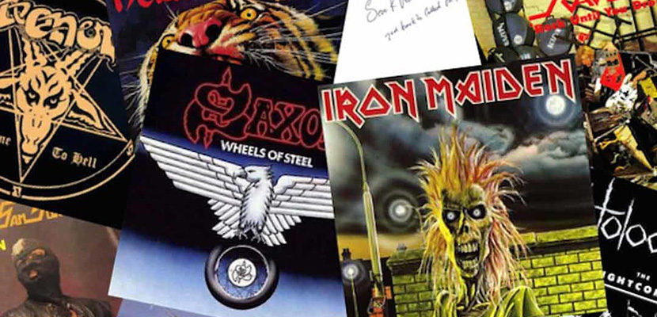
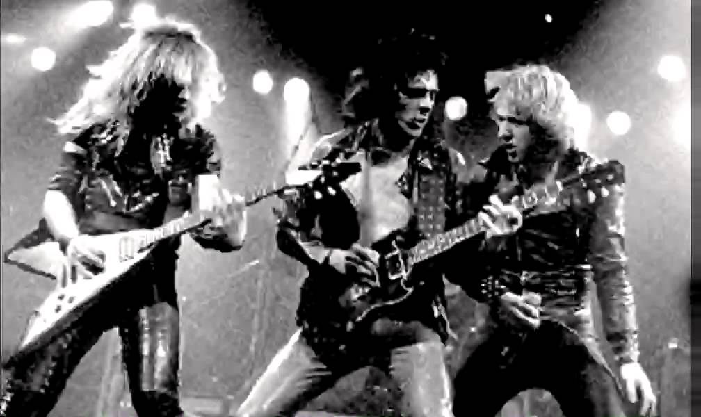

Saiba um pouco sobre o Gênero Musical:  Heavy metal (ou simplesmente metal) é um gênero do rock que se desenvolveu no final da década de 1960 e no início da década de 1970, em grande parte no Reino Unido e nos Estados Unidos. Tendo como raízes o blues-rock e o rock psicodélico (psicadélico, em português europeu), as bandas que criaram o heavy metal desenvolveram um som massivo e encorpado, caracterizado por um timbre saturado e distorcido dos amplificadores, pelas cordas graves da guitarra para a criação de riffs e pela exploração de sonoridades em tons menores, dando um ar sombrio às composições. O Allmusic afirma que "de todos os formatos do rock 'n' roll, o heavy metal é a forma mais extrema em termos de volume e teatralidade". As primeiras bandas de heavy metal como Led Zeppelin, Deep Purple e Black Sabbath atraíram um grande público, apesar de muitas vezes serem desdenhadas pelos críticos, um fato comum em toda a história do gênero. Em meados dos anos 1970, o Judas Priest ajudou a impulsionar a evolução do gênero suprimindo muito da influência do blues existente; o Motörhead introduziu a sensibilidade do punk rock e uma ênfase crescente na velocidade. Bandas do New Wave of British Heavy Metal como Iron Maiden e Saxon seguiram o mesmo caminho. Durante os anos 1980, o glam metal tornou-se uma força comercial com grupos como Mötley Crüe e Poison. O underground produziu cenas mais extremas e estilos agressivos: o thrash metal invadiu o mainstream trazendo à luz bandas como Anthrax, Megadeth, Metallica e Slayer, enquanto outros estilos ainda mais pesados como o death metal e o black metal permaneceram como fenômenos da subcultura do metal. Desde meados da década de 1990, estilos populares como o groove metal (ex.: Pantera) que combina metal extremo com hardcore punk, e o nu metal (ex.: Korn), que incorpora elementos de grunge e hip hop, ajudaram a ampliar a definição do gênero. História do Heavy Metal:  Enquanto o estilo de guitarra típico do heavy metal, construído em torno de riffs e acordes pesados e distorcidos, pode ter suas origens encontradas nos instrumentais do americano Link Wray, no fim da década de 1950, a linhagem direta do gênero se inicia no meio da década seguinte. O blues americano se tornou uma grande influência para os primeiros músicosdo gênero na Grã-Bretanha, e bandas como Rolling Stones e The Yardbirds desenvolveram o blues-rock, gravando covers de muitas canções clássicas do blues, frequentemente acelerando seus andamentos. À medida que experimentavam com a música, estas bandasbritânicas influenciadas pelo blues e as bandas americanas que elas influenciavam, por consequência desenvolveram o que se tornaria posteriormente a marca registrada do heavy metal, em especial o som alto e distorcido da guitarra. O Kinks desempenhou um papel crucial ao popularizar este som em seu hit de 1964, "You Really Got Me". SAIBA MAIS CLICANDO AQUI Conheças os mais variados Festivais do gênero: Anualmente acontecem vários festivais em torno do mundo, muitos deles é voltado ao mundo do metal. com as mais variadas bandas do gênero, dentre elas estão as bandas, Kiss, Stone sour, Testament, Linkin Park e mais outras. Quer conhecer mais sobre estes festivais?CLIQUE AQUI Conheça algumas bandas desconhecidas: Muitas bandas começam e acabam sem que nos as conhecemos, venha conosco nesse mundo obscuro do metal e conheça varia bandas que merecem muito o seu e nosso reconhecimento.CLICANDO AQUI Formulario de pesquisa: O que você está achando sobre este site? Ajude-nos a melhorar CLIQUE AQUI Fonte: Data: 13/03/2021 – Sabado Horario: 14:39:46 Criado e Desenvolvido por: Pedro Rammé Figueira